三步开始使用
先把渠道填进去，再选择要接入的 AI 编程智能体，剩下的交给 AnyBridge。
- 1去发布页下载最新版安装包。Windows 用户一般选择带
Setup.exe的文件。 - 2打开 AnyBridge，添加 API 密钥、接口地址，在线拉取并勾选模型。
- 3在「智能体」页选择 Cursor、Claude Code、Pi、Hermes 等工具，一键切换。
AnyBridge 是一款开源、本地运行的 BYOK（自带渠道 / 自带密钥）模型接入工作台。它把你的 API 密钥、模型供应商、本地代理、模型映射与智能体配置切换，集中到一个桌面控制面里 —— 不用手写配置，随时一键还原。
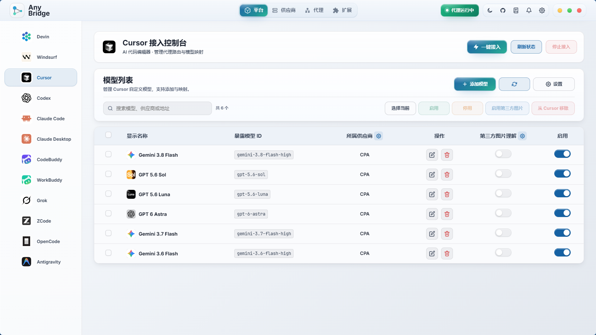
不用命令行，不用配开发环境。按系统下载安装包，安装后添加供应商、选择智能体，两步就能用上你自己的模型。
先把渠道填进去，再选择要接入的 AI 编程智能体，剩下的交给 AnyBridge。
Setup.exe 的文件。发布页提供多个系统的安装包，普通用户优先选择安装器。
安装后打开 AnyBridge，先添加供应商和模型，再到「智能体」页选择你正在用的工具并点击切换；需要代理模式的工具按提示重启一次即可。
不强迫所有工具走同一条路。AnyBridge 按工具特性选择代理接管、配置直写或标准 API 网关。
适合不开放自定义密钥的桌面 IDE，通过本机代理识别并转发会话请求。
适合原生支持自定义 API 的智能体，自动写入正确配置文件，写完即可关闭 AnyBridge。
把不同上游供应商统一暴露成 OpenAI 兼容接口，任何支持自定义 API 的工具都能接入。
/v1/chat/completions有的只能通过本机代理接入，有的可以写配置直连，也都可以统一走 AnyBridge 本地网关来获得聚合、备用模型和代理增强。
适合本身支持自定义 API 的智能体。AnyBridge 把供应商地址、密钥和模型写进工具配置后，工具直接连上游供应商。链路短，适合固定使用某一个渠道。
请求先到 AnyBridge 本地代理，再转给上游模型。这样可以使用模型聚合、故障切换、代理增强、图片理解降级、统一统计和日志诊断。
Cursor 没有自定义 API 入口，通过本机代理接入最合适。AnyBridge 集中管理代理、证书、模型路由和状态检查。
在 Cursor 页面启动代理并写入接入配置，重启 Cursor 后请求进入 AnyBridge。
在页面里一键还原直连配置，恢复 Cursor 原始状态。
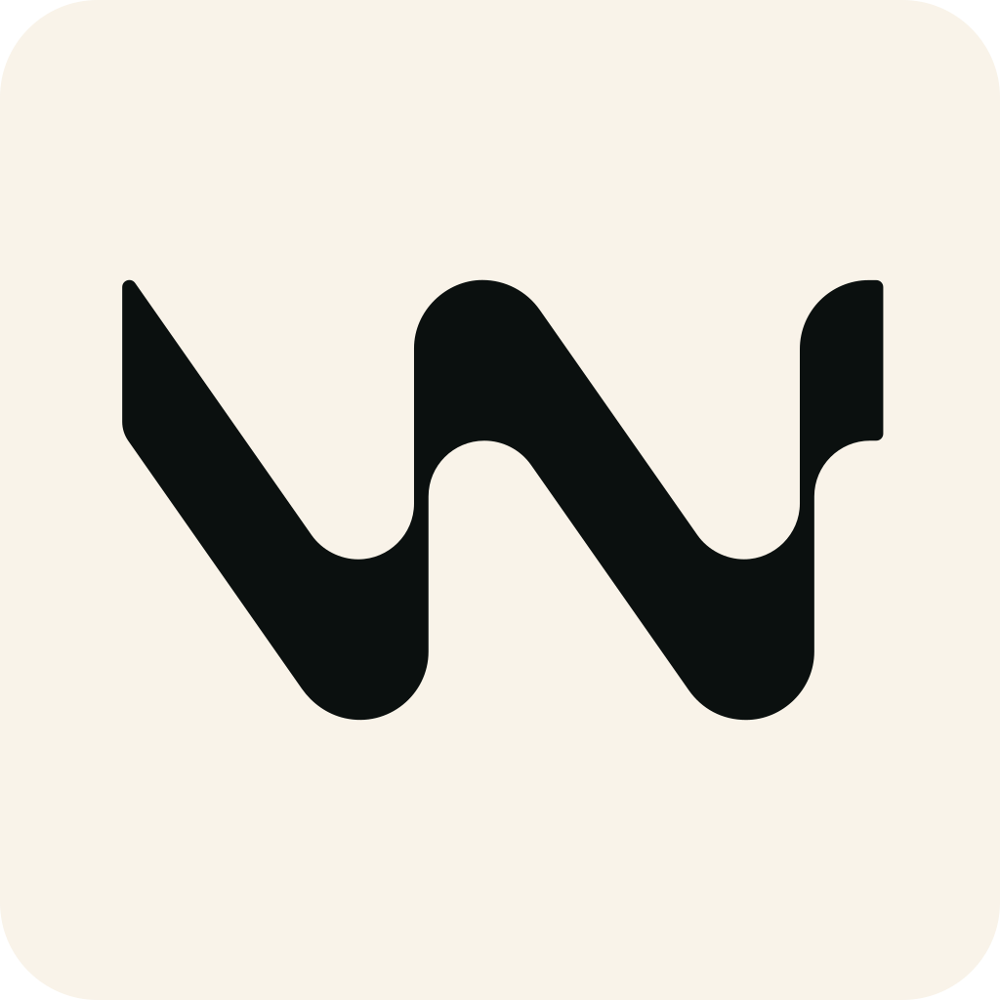
Windsurf 不适合手动填自定义 API。AnyBridge 通过本机代理接管会话请求，并把你配置的模型展示给 Windsurf 使用。
在 Windsurf 页面一键接入，按提示安装证书并重启 Windsurf。
Devin 的会话请求适合通过本机代理接入。AnyBridge 识别会话调用并转换为你配置的供应商格式。
在 Devin 页面点击接入，写入代理设置并启动本机代理，重启 Devin 生效。
Codex CLI 通过配置切换接入；Codex Desktop 还能通过运行时注入，把第三方模型直接加进模型选择器。
写入配置后由 Codex 直接调用上游，链路短。
需要聚合、备用模型、代理增强和统一日志时选择。
Claude Code 本身支持自定义接口，但手动配置路径和字段比较麻烦。AnyBridge 帮你写入并随时恢复。
写入稳定的 Anthropic 兼容配置，切换后 Claude Code 直连上游。
适合统一模型池、看统计日志、使用备用模型与代理增强。
Claude Desktop 支持通过配置文件接入自定义端点，AnyBridge 自动写入正确路径与字段，并保留你的原有配置。
写入后 Claude Desktop 直接使用你的渠道与模型。
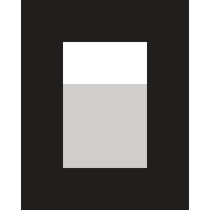
OpenCode 使用供应商配置。AnyBridge 把新配置追加到 opencode.json，不覆盖你已有的其他供应商。
把某个 OpenAI 兼容供应商直接加入 OpenCode，配置清晰。
接到 AnyBridge 聚合模型池，获得备用链路、图片降级和统一日志。
Grok 命令行使用 config.toml 管理端点与模型。AnyBridge 自动写入并支持一键切换与还原，不用手动改 TOML。
写入后 Grok 直接请求你的渠道，不依赖 AnyBridge 常驻。
统一走本地网关，获得聚合、备用模型与统计能力。
grok 即生效。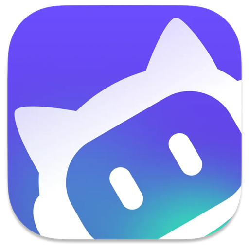
CodeBuddy 可以管理自定义模型列表。AnyBridge 支持从供应商添加模型，也会把「AnyBridge 本地代理」放在供应商列表首位。
模型直接写成某个供应商的接口地址和密钥，链路简单。
选择本地代理作为供应商，聚合、备用模型、图片降级全由 AnyBridge 处理。
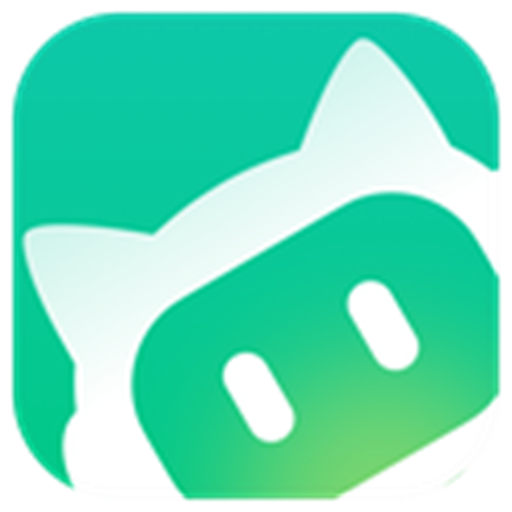
WorkBuddy 与 CodeBuddy 的配置管理方式接近，AnyBridge 支持单独管理，也支持双端同步。
固定使用某几个供应商模型，配置写入后不依赖 AnyBridge 常驻。
请求统一进 AnyBridge，获得聚合、故障切换和代理增强。
ZCode 使用偏原生嵌套的供应商与模型配置。AnyBridge 提供列表管理和 JSON 编辑器，方便导入导出。
写入某个供应商的原生配置，让 ZCode 直接请求上游。
统一走本地接口，把多供应商、备用模型和增强能力聚合给 ZCode。
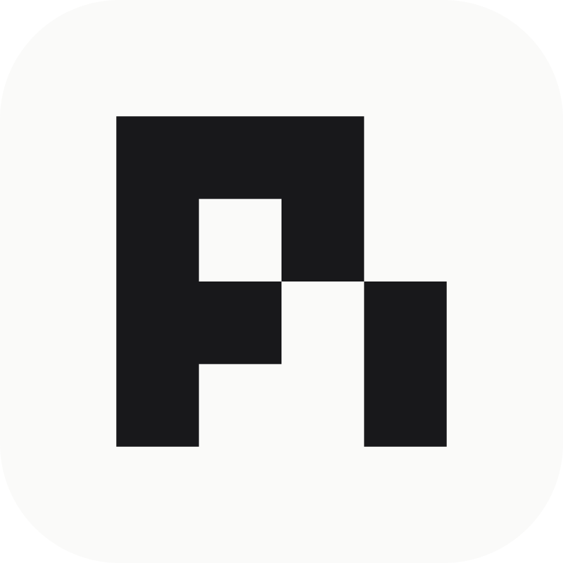
Pi 是极简可扩展的终端编码智能体。AnyBridge 把自定义渠道模型写入 models.json 的 providers，并把首条启用模型设为默认模型。
模型条目直接指向你的供应商端点，写入后不依赖 AnyBridge 常驻。
从「AnyBridge 本地代理」导入模型，请求统一进 127.0.0.1:7450。
Hermes Agent 的 custom_providers 写在 config.yaml 里。AnyBridge 按供应商分组写入渠道，并把首条启用模型设为默认模型。
渠道条目直接指向你的供应商端点与密钥。
导入本地代理模型池，获得看图备用与请求日志。
DeepSeek Harness 的渠道写在 settings.yaml 的 llm-pi-ai.providers 中。AnyBridge 按供应商分组写入，密钥按引用名存进独立的凭据文件。
渠道条目指向你的供应商端点，写入后不依赖 AnyBridge 常驻。
接入本地代理模型池，统一走 127.0.0.1:7450。
.credentials.yaml，不散落在主配置里。Antigravity 是独立桌面端智能体，界面为英文。AnyBridge 通过端点补丁注入 + 配置写入双通道接入，并支持界面一键汉化。
写入原生配置后 Antigravity 直连你的渠道。
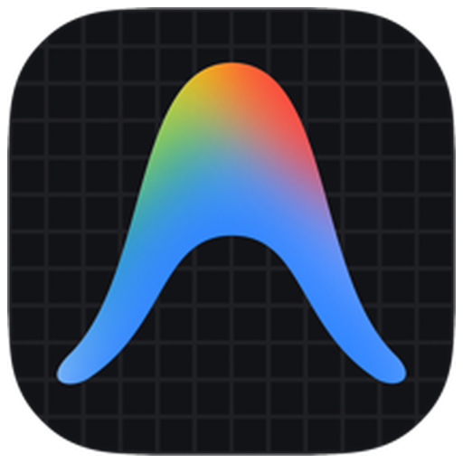
Antigravity IDE 基于 VS Code 架构。AnyBridge 写入原生配置并同步环境变量，同时支持界面一键汉化。
配置写入后 IDE 直接使用你的模型渠道。
看图模型不足、模型列表被写死、多个工具重复配置、代理出错难排查，这些都放进了同一个控制台。
把客户端固定的模型槽位（如 Cursor 的 cursor-small）映射到你真正想用的模型，也可以统一对外暴露的模型 ID。
截图先交给视觉备用模型分析，文字描述再交给 DeepSeek、GLM、Qwen 等文本模型继续回答，支持按渠道单独指定。
通过 CDP 运行时注入把你配置的模型加入 Codex Desktop 下拉列表，不需要改任何二进制文件。
自动构造 anthropic-beta 头、Thinking 参数与会话指纹，让任意智能体顺利通过中转站校验，不再被 503 / 400 拒绝。
按备用链路切换，配合重试策略处理临时网络错误、429 限流与供应商不可用，长推理请求还有超时保护。
Anthropic、OpenAI、DeepSeek、智谱、月之暗面或自建接口统一管理，不用每个工具重复填密钥。
把 AnyBridge 作为本地接口给更多工具调用，地址就是 http://localhost:7450/v1。
检测证书、路径、配置、Sidecar、端口与供应商连通性，并验证流式、工具调用与视觉能力，避免隐性失败。
内置扩展中心管理 CLIProxyAPI + CPA Manager Plus + 插件商店，安装、启动、更新和日志全部在 UI 里完成。
内置主流模型推荐配置，添加模型时自动匹配 maxInputTokens 与 maxOutputTokens，不用手动查文档。
内置本地化引擎与在线词库热更新，覆盖高频操作、设置与提示，代码与思考链受保护不被误译。
为自建网关、内网代理或需要私有认证的中转站自由添加 Custom Headers。
日常使用就是添加供应商、选择模型、切换智能体、观察日志和统计。
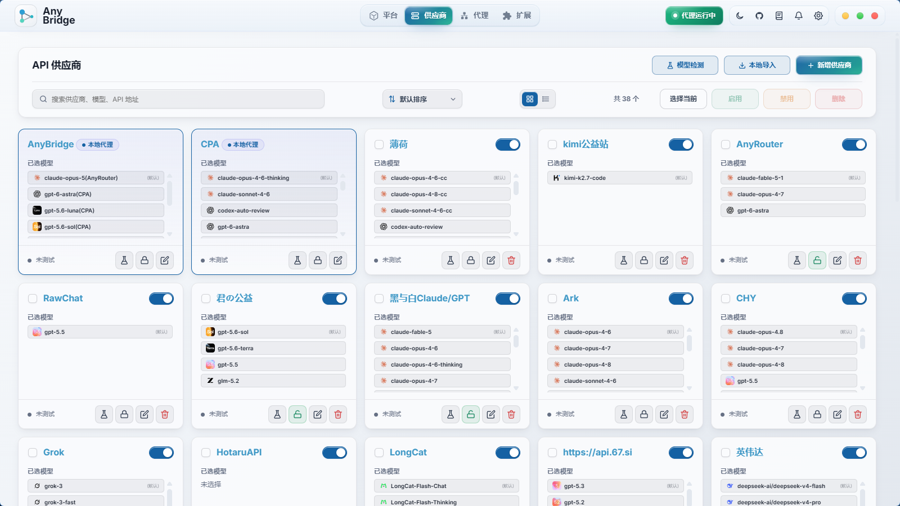
集中维护 API 密钥、接口地址、协议格式、模型列表和启用状态。
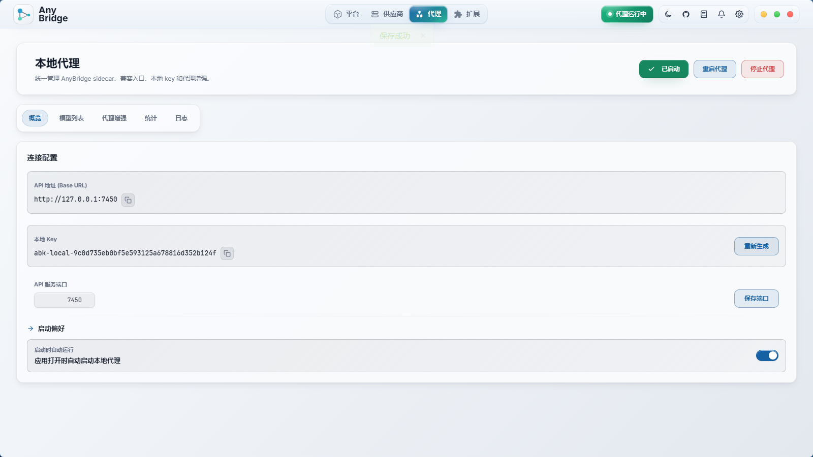
统一管理 Sidecar 服务、本地代理入口、本地 Key 与代理端口。
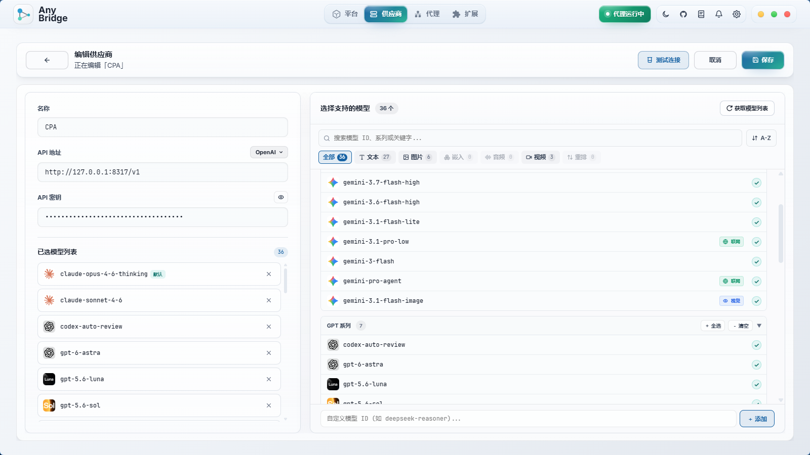
Codex / Claude Code 等配置一键切换与恢复，官方与第三方互不干扰。
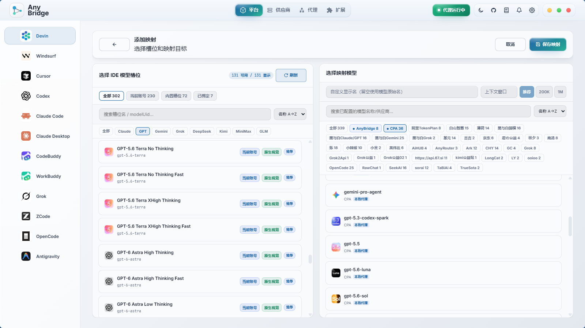
把客户端写死的模型槽位指向你真正想用的目标模型。
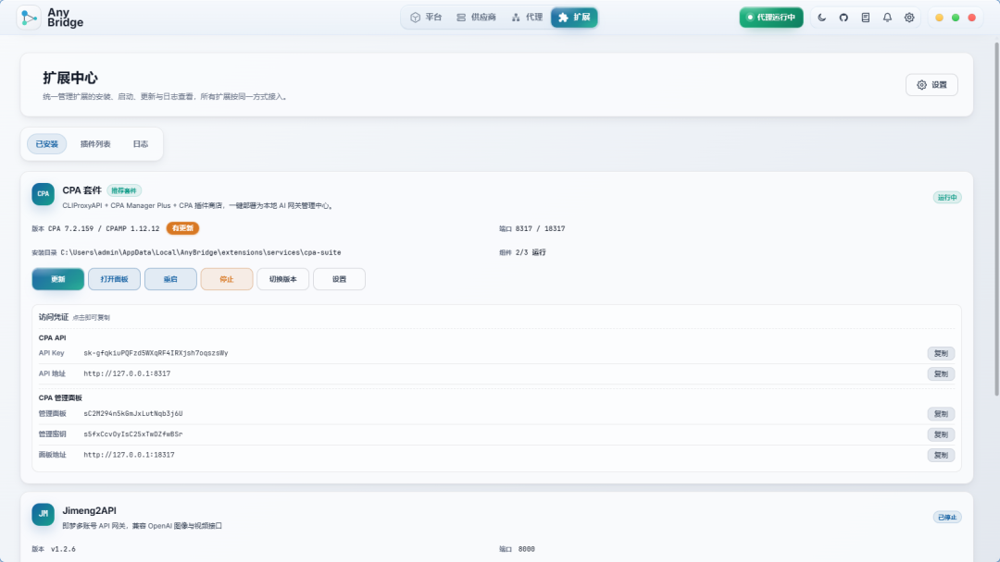
CPA 套件一键安装、启动与更新，插件商店开箱即用。
普通用户只要知道：桌面端负责配置，本地代理负责转发，上游模型供应商由你自己填写。
添加供应商、选择模型、切换智能体、安装证书、查看日志和统计，都在桌面端里完成。
智能体发来的会话请求进入本机代理，再按你的模型映射发到对应供应商。
可以接 Anthropic、OpenAI、DeepSeek、智谱、MiniMax 或任何兼容接口。
请求统计、错误日志、连通性测试和环境体检帮你定位到底是哪一层出错。
统一网关地址：http://localhost:7450/v1（OpenAI / Anthropic 兼容）
健康检查：http://localhost:7450/__byok/health 返回 {"status":"ok"}
统计接口：http://localhost:7450/__byok/stats
一般选择发布页里带 Setup.exe 的安装包（也可选 .msi）。下载后双击运行，按安装向导继续即可，不需要命令行环境。
不会。AnyBridge 是本地运行的开源桥接工具，运行时配置保存在你电脑的应用数据目录里，没有任何远程收集服务。
不需要。下载安装包后打开桌面端，在界面里添加供应商、选择智能体并点击切换即可。
目前支持 16 款：Cursor、Windsurf、Devin、Antigravity、Antigravity IDE、Codex、Claude Code、Claude Desktop、OpenCode、Grok、CodeBuddy、WorkBuddy、ZCode、Pi、Hermes、DeepSeek Harness；Cline、Continue、Aider 等可通过本地网关接入。
不会。只有会话请求经过转换，代码补全、索引检索与登录鉴权全部走官方原生链路。
在智能体页面点击「恢复原始配置」即可一键还原；关闭软件也会自动复原网络环境，绝不残留。